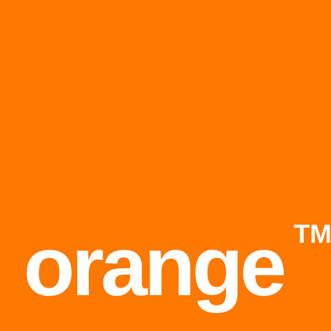
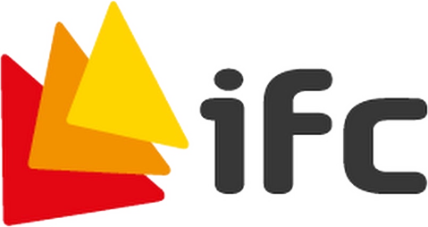

A/00 · accueilportfolio — édition 2026France · 46.54° N, 2.43° E
« Bien faire,puis l'écrire. »
chez Orange, je diagnostique les incidents N1–N2 et je prépare les postes Windows 11, en parallèle de mon BTS SIO option SISR à l'IFC Marseille, je transforme ces interventions et mes TP en procédures vérifiables
fig. 01œil · 01clignement · 3,8 – 7 scontour · tracé de l'œiliris · r = 13,5pupille · r = 6 · suit le curseurmouvement · suivi progressif|← 100 × 62 →|suit le curseurappuyer · détails

alternanceterrain — support N1–N2×

formationBTS SIO SISR — session 2027
défiler
A/01
À propos
je pars des symptômes signalés et je teste les causes possibles, je documente ensuite le résultat, l'utilisateur repart avec un poste vérifié et le prochain technicien peut comprendre l'intervention
mon alternance chez Orange m'apprend à contrôler chaque intervention, à l'IFC, j'applique la même méthode au réseau, aux serveurs et à la sécurité
à propos de moi
je m'appelle Antoine Soler-Mores et je prépare mon BTS SIO option SISR à l'IFC Marseille, je travaille sur des incidents réels chez Orange et j'approfondis l'administration des systèmes et des réseaux avec les TP
dans les TP ImmoSud et CyberPeak, je configure le filtrage, les VLAN et les services système, je vérifie chaque déploiement par des tests, puis je rédige la procédure avec les commandes, les captures et les résultats obtenus
j'effectue mon alternance dans le service informatique d'Orange à Marseille avec M. Franck Pouilly comme maître d'alternance, au poste de technicien soutien de proximité, j'interviens à l'Espace Service, sur le site et en boutiques
je commence par le symptôme décrit par l'utilisateur, après les tests et les remplacements nécessaires, je renseigne les actions et les contrôles dans le ticket
diagnostiquer les incidents et intervenir sur les clés PKI
préparer les postes et transférer les données
consigner les actions et les contrôles dans les tickets
≈ 1 200salariés dans mon périmètre de support
5–6interventions par jour, sur site et en boutiques
N1–N2niveaux de support traités à l'Espace Service
ouvrir la fiche complète →
A/02
Projets & réalisations
le dossier E5 présente mon alternance chez Orange, le dossier E6 regroupe l'administration du TP ImmoSud, avec les contrôles et les documents correspondants
Projet professionnel · épreuve E5Orange — Marseille
le dossier part des demandes reçues à l'Espace Service et suit les opérations jusqu'aux contrôles finaux, il regroupe les migrations de postes, les clés PKI et l'installation de positions de travail, avec les preuves correspondantes
avec mon binôme, j'ai configuré pfSense et le commutateur Cisco pour segmenter les VLAN, j'ai ensuite déployé les services du TP, dont Active Directory, Zabbix, Exchange et Xivo, puis j'ai confronté chacun au plan de tests
dossier E6 — 86 pages
A/03
Tableau de synthèse
TCS
référentiel — session 2027
Tableau de synthèse des compétences
chaque compétence du référentiel renvoie à une réalisation et à sa preuve, le tableau couvre mes interventions Orange pour l'E5 et mes déploiements techniques pour l'E6
A/04
Parcours & certifications
je distingue les diplômes et badges obtenus, les formations en cours et les objectifs à venir, les badges délivrés sont vérifiables sur Credly
2024 obtenu
Bac professionnel Logistique
AFTRAL — Marseille
SSTSauveteur Secouriste du TravailINRS — prévention & secoursCACACES — catégories 1, 3 et 5conduite d'équipements de manutention
2025 obtenu
Cisco Networking Basics — notions de base sur les réseaux
Mastère 2 IIC (Bac +5) — Ingénieur en informatique et cybersécurité
IFC Marseille
Microsoft Azurecloud · identité · réseauAWScloud · architectureGoogle Cloudcloud · approfondissementCCNP 1 & 2ENCOR · ENARSICCIEobjectif de certification à long terme
A/05
Veilles
une veille consiste à suivre un sujet avec des sources fiables et à noter les informations utiles, leur date et leur source, elle me permet de comprendre ce qui évolue et de retrouver ce que j'ai déjà consulté
juridique · réglementationcréée · oct. 2024
Directive NIS2 — obligations de cybersécurité
je suis la transposition de la directive et les mesures publiées par l'ANSSI, je rapproche ces exigences des contrôles d'accès, de la gestion des incidents et des gestes de sécurité rencontrés en alternance
ANSSIEUR-LexCERT-FR
ouvrir la veille — obligations, chronologie, application →
technologique · sécurité des accèscréée · sept. 2024
MFA et Zero Trust — sécuriser les accès
je compare les facteurs de connaissance, de possession et biométriques pour comprendre l'intérêt du MFA face à un mot de passe volé, la clé PKI me donne un cas concret, vérifié lors de l'ouverture de session après un remplacement de poste
ANSSICERT-FRIT-Connect
ouvrir la veille — définition, facteurs, application →
⌁
Derniers avis du CERT-FR
un flux RSS rassemble automatiquement les nouvelles publications d'une source, ici, il affiche les derniers avis du CERT-FR, leur date, un résumé et le lien officiel
chargement des derniers avis du CERT-FR, chaque entrée renvoie vers l'avis officiel
…cert-fr
Chargement des avis…
les derniers avis du CERT-FR sont en cours de chargement
le journal garde une trace des informations repérées, j'y inscris la date, le sujet, ce que j'en retiens et la source pour vérifier l'information et suivre son évolution
17 mars 2026juridique
Publication du Référentiel Cyber France
j'ai ajouté le ReCyF à ma veille après sa présentation par l'ANSSI, ce document de travail non obligatoire par défaut décrit les mesures recommandées pour atteindre les objectifs de sécurité de NIS2
je retiens la recommandation du CERT-FR, migrer vers une version supportée ou isoler les systèmes impossibles à migrer, le CERT-FR indiquait aussi que 68 % des postes des organismes utilisant son service ADS fonctionnaient encore avec une version antérieure à Windows 11
Transposition de NIS2 : vote en commission spéciale
j'ajoute à ma chronologie l'adoption du projet de loi « résilience des infrastructures critiques et renforcement de la cybersécurité » par la commission spéciale de l'Assemblée nationale, le Sénat l'avait adopté en première lecture le 12 mars 2025
Windows Server 2025 passe en disponibilité générale
je garde cette version LTSC dans mon suivi de Windows Server, le hotpatching et l'intégration hybride Azure sont des points à étudier avant de choisir une version pour un futur TP
cette date limite sert de point de départ à ma chronologie, la directive (UE) 2022/2555 distingue les entités essentielles et importantes et couvre notamment les télécommunications
je relie l'authentification multifacteur mentionnée dans NIS2 à mon dossier E5, la clé PKI contient le certificat de l'utilisateur, elle correspond au facteur de possession que je prends en charge lors des remplacements et des déblocages
je rassemble ici les dossiers et procédures issus de mes manipulations, chaque fiche permet de consulter les commandes, les captures et les tests, puis de télécharger le document
aucune fiche ne correspond à cette recherche
épreuve E5
Contexte professionnel
le dossier d'épreuve regroupe mes interventions chez Orange, les procédures internes restent hors publication
E5·02interne · confidentiel🔒N° 02
Procédures Orange
je rédige aussi des procédures pendant mon alternance, leur contenu reste interne au groupe et aucun document de cette catégorie n'est publié ici
confidentialité — interne
épreuve E6
Contexte scolaire — TP de l'IFC
ces documents présentent les configurations et les vérifications réalisées dans les TP ImmoSud et CyberPeak
je rédige chaque procédure après les manipulations, je conserve les vraies captures et je joins les commandes ou les tests qui permettent de vérifier le résultat
A/07
Contact
je suis disponible pour échanger sur un poste, une alternance ou mes réalisations, vous pouvez m'écrire pour consulter mon CV ou demander un extrait de mes travaux publiables